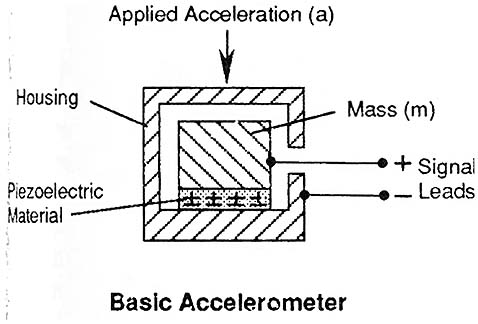
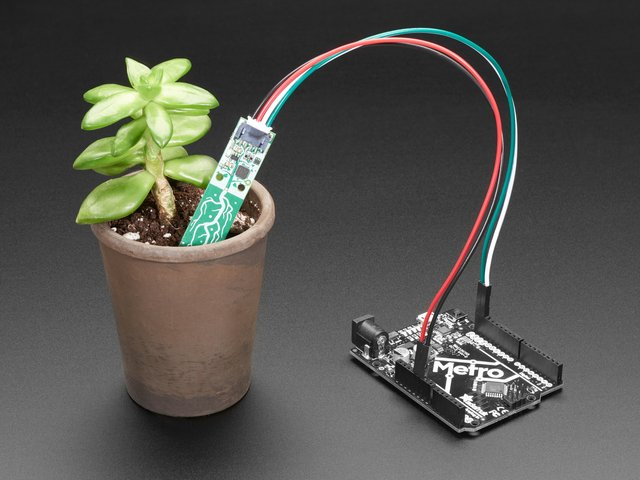

Progress Report for Mitchell Ciupak
Week 1:
Date: 4 September 2020Total hours: 4
Description of design efforts:
- The main contribution my team members and I worked on this week was setting up our project site. This week we all used the template to create our current site, but I set up webhooks into our repository to automatically push the site to the shay server via SFTP.
- I spent time diagraming the design of the software.
Week 2:
Date: 11 September 2020Total hours: 6
Description of design efforts:
- In an effort to finalize compoenent choices, I spent time shopping on various electronic suppliers as well as researching more about my main area of focus: Inertial Measurement Units. I spent time researching how accelerometers, gyroscopes, and magnetometers work in modern circuits.
Figure [1]
- As Systems Engineer, I spent time reading about software design in microcontrollers via online resources.
- I created a testable work environemnt or playground with an STM32 to test code for next weeks "Show me a thing".
Week 3:
Date: 18 September 2020Total hours: 4
Description of design efforts:
This week my contributions to the team consisted of only a few things. In an effort to finalize our Bill of Materials, I researched the use of STEMMA QT connectors and it's effectiveness in our project. I researched battery chemistries and discharge curves with respect to a temperature range appropriate to fulfill our first PSSC (An ability to operate for 5 hours at 0 degrees Fahrenheit). Lastly, Kennedy, our team leader, took the initiative on this week's Show Me A Thing. However, in an effort to help debug with her, I discovered an STM32 Library that I believe will assist in the development of our project. Looking ahead, I plan to take the lead on next week's Show Me A Thing, order parts and begin familiarizing myself with our micro's documentation and
- STEMMA QT connectors are a combination of JST PH connectors used to connect additional peripherals to through pin connections or back to a STEMMA QT port. I believe the use of these connectors will help with 2 things. The convenience of connecting a component like the IMU. These connections will also help protect against power management mentioned in lectures. Images of these connectors can be seen below.
Figure [2]Figure [3]

- While getting set up with a STM32F0, I stumbled across a resource called Hackster.io [4]. This site has a lot of reference material to use for STM32 based microcontrollers. Additionally, all of the tutorials include a library called stm32f0xx_hal [5]. This library holds many starter functions to make development on the STM32L4 easier.
Week 4:
Date: 25 September 2020Total hours: 2
Description of design efforts:
This week my contributions to the team outside of regular coursework and schedualed meetings only consisted of one thing. I studied Real Time Operating Systems (RTOS) and analyzed their potential application to our project.
- I researched the popular kernels mentioned in this week's lectures, ChibiOS[6], FreeRTOS[7], SafeRTOS[8], and Integrity[9]. The factors that I looked for in improving our system was the ability to improve our projects testing and event handling. After considering all these options, I as well as my teammates decided that we will be going in an Interrupt/Event Diven Approach due to its performance and power benefits.
Sources Cited:
[1] Industrial Electronics.com. 2020. Industrial Electronics. [online] Available at: <https://www.industrial-electronics.com/DAQ/industrial_electronics/input_devices_sensors_transducers_transmitters_measurement/Accelerometers.html> [Accessed 11 September 2020].
[2] Adafruit.com. 2020. Adafruit Industires. [online] Available at: <https://learn.adafruit.com/introducing-adafruit-stemma-qt> [Accessed 18 September 2020].
[3] Adafruit.com. 2020. Adafruit Industires. [online] Available at: <https://learn.adafruit.com/introducing-adafruit-stemma-qt> [Accessed 18 September 2020].
[4] Hackster.io 2020. Hackster Inc. [online] Available at: <https://www.hackster.io/> [Accessed 18 September 2020].
[5] ST.com. 2020. STMicroelectronics. [online] Available at: <https://www.st.com/resource/en/user_manual/dm00122015-description-of-stm32f0-hal-and-lowlayer-drivers-stmicroelectronics.pdf> [Accessed 18 September 2020].
[6] chibios.org. 2020. ChibiOS. [online] Available at: <https://www.chibios.org/dokuwiki/doku.php> [Accessed 25 September 2020].
[7] freertos.org. 2020. FreeRTOS Inc. [online] Available at: <https://www.freertos.org/> [Accessed 25 September 2020].
[8] highintegritysystems.com. 2020. WITTENSTEIN aerospace and simulation Ltd. [online] Available at: <https://www.highintegritysystems.com/safertos/> [Accessed 25 September 2020].
[9] ghs.com. 2020. Green Hills Software . [online] Available at: <https://ghs.com/products/safety_critical/integrity_178_tump.html> [Accessed 25 September 2020].